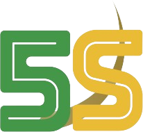

تربة الموقع بدل الاستيراد
لا حاجة لنقل طبقات الصخور والأسمنت والبيتومين والطين.
تثبيت الطرق الترابية والمواقف
يحوّل 5S ROAD التربة الموجودة في الموقع إلى طبقة متماسكة بصلابة تقارب الخرسانة، فيقل الاعتماد على المواد المنقولة، ويتسارع التنفيذ، وتنخفض تكاليف الصيانة طوال عمر الطريق.

التحدي
في الطرق التقليدية تُزال التربة المحلية الضعيفة، وتُستبدل بطبقات ركامية تُنقل من محاجر بعيدة، ثم الأسمنت أو البيتومين. وهذه أكثر مراحل المشروع استهلاكًا للوقت والوقود والميزانية.
الحل
5S ROAD يغيّر هذه المعادلة. تُخلط تربة الموقع بمادة التثبيت، وهي بوليمر أكريليكي مائي الأساس، ثم تُدك بالمعدات القياسية. تتغلغل المادة بين الحبيبات وتربطها، فتتشكل طبقة متجانسة عالية التحمل ومقاومة للمياه والتشقق، تتحمل المرور المتكرر للشاحنات الثقيلة.
لماذا خيار استراتيجي؟

الميزات والخصائص
لا حاجة لنقل طبقات الصخور والأسمنت والبيتومين والطين.
رفع نسبة تحمّل كاليفورنيا (CBR) حتى 340%*.
نفاذية وامتصاص وانتفاخ أقل، فلا تفقد الطبقة قوتها عند التشبع.
تتحمل الأحمال الديناميكية دون التشققات الانكماشية الشائعة في التثبيت بالأسمنت.
حماية من الهبوط والتموج والحفر.
غير سامة وغير قابلة للاشتعال، وتقبل إضافة الألوان.
النتائج المتوقعة
| المعيار | الطريقة التقليدية | 5S ROAD |
|---|---|---|
| المواد المنقولة للموقع | كميات كبيرة من الركام | الحد الأدنى |
| زمن التنفيذ | عدة أسابيع للكيلومتر | أيام معدودة للكيلومتر |
| تكلفة الإنشاء | 100% (مرجعية) | أقل بنسبة 20–50%* |
| تكرار الصيانة | دوري | موضعي كل بضع سنوات |
شبكات طرق ريفية وصحراوية أطول بالميزانية ذاتها.
تسليم أسرع، وهامش أعلى، واعتماد أقل على توفر المحاجر.
طرق خدمة ونقل ثقيل تتحمل الأحمال المحورية العالية بأقل توقف تشغيلي.
طرق داخلية مؤقتة ودائمة في مراحل التطوير المبكرة.
الصيانة والاستدامة
فترات صيانة معروفة مسبقًا، ونتائج تُقاس في المختبر قبل الموقع.
صيانة موضعية فقط، وطبقة مانعة للتسرب بمعدل مخفض كل 24–36 شهرًا
لا تحتاج صيانة مستقلة
تتحمل الحرارة العالية والفروق الحرارية والأمطار المفاجئة
يمكن إعادة معالجة الطبقة القديمة عند التطوير بدل إزالتها
من 5 إلى 8 سنوات* حسب أحمال المرور وجودة التنفيذ
أفضل مادة لطريقك موجودة بالفعل في موقعك.
فريقنا الهندسي جاهز لزيارة موقعك وتحليل تربتك واقتراح التركيز والكمية المناسبة.